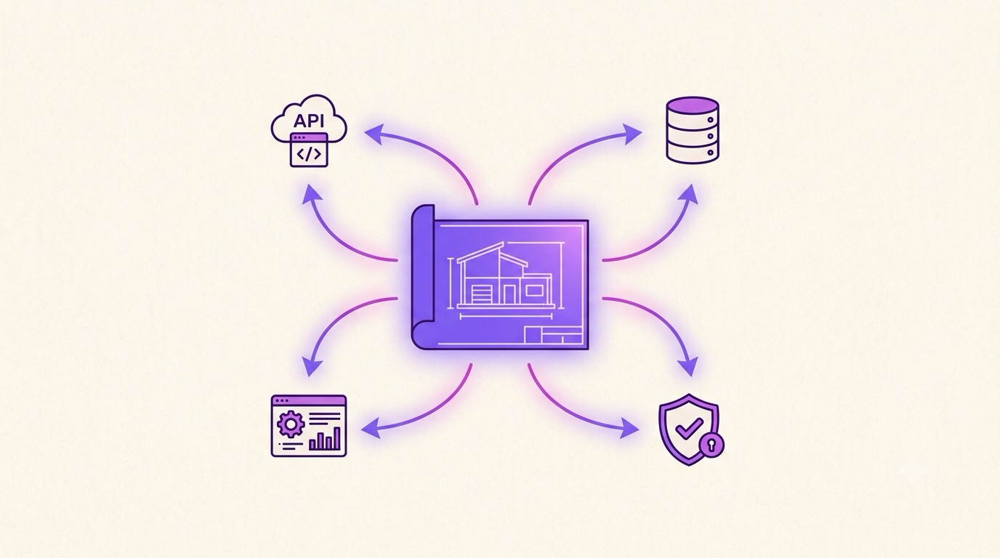

Chapter 01 · The Big Idea
1What Is Ash?
Ash is a declarative application framework for Elixir. You describe what your app is; Ash builds most of the how.
Here's the whole philosophy in one line, straight from the docs:
Most frameworks have you build bottom-up: start with database tables, wire up an ORM, hand-write controllers, then repeat that plumbing for every REST endpoint, GraphQL field, and background job. Ash flips it. You define your domain once as resources and actions, and — because those definitions are introspectable and fully typed — extensions can read them and build the plumbing for you.

A clean, modern editorial illustration in flat vector style: a single glowing violet architectural blueprint at the center, with elegant arrows radiating outward to four small labeled icons — a GraphQL/REST API endpoint, a database cylinder, a shield (authorization), and an admin dashboard. Conveys "one source of truth generates everything." Warm off-white paper background, violet and magenta accents, generous whitespace, no baked-in text. Target size ~1280×720px, 16:9 landscape; keep the subject centred with safe margins.
Generate this with your image agent, then drop the file here.
Declare once, derive many
The diagram below is the mental model to keep for the whole book. On the left is the small thing you write. On the right is what Ash and its extensions generate for you.
Escape hatches all the way down
“Derive the rest” could sound scary — what if the generated code isn't what I need? Ash's answer is multi-tiered configurability: strong defaults for ~80% of cases, deep configuration for the next ~15%, and the ability to drop down to raw Ecto or SQL for the last ~5%. You're never trapped.
For the rest of this book we'll build a small Helpdesk — tickets and the representatives who handle them — and watch the framework derive more and more from that one small model.